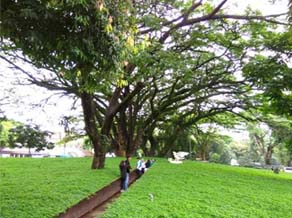
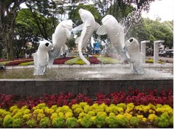
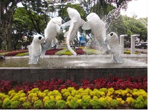
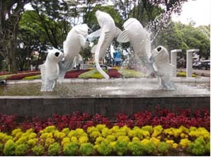

Taman Balai Kota
Taman ini sudah sejak lama berdiri, dan sering digunakan untuk berolahraga seperti
bersepeda. Namun dengan sedikit renovasi dan ditambahnya fasilitas, taman ini semakin
ramai dikunjungi, entah untuk bersantai, berolahraga maupun bermain. Prisma gembok
cinta, salah satu fasilitas yang disediakan untuk menggembok cinta dengan sebuah
gembok, cocok bagi pasangan yang sedang jatuh cinta. Jika belum punya pasangan jangan
berkecil hati, Anda juga bisa datang ke taman ini untuk sekedar menjelajah dunia maya
dengan fasilitas Wi-fi gratis yang disediakan ataupun berfoto.

 

